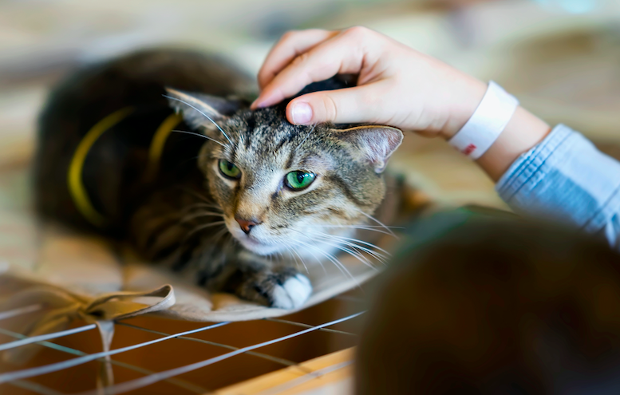

No se me ocurre nada mejor en la vida que adoptar un gato. Abrir las puertas de tu hogar y de tu corazón a un felino es la mejor decisión que puedes tomar. Los refugios o protectoras de animales y por desgracia las calles, están llenas de peludos que necesitan una familia. Un gato en casa aporta diversión, compañía, cariño y cuando se adopta, además, se lleva a cabo una acción solidaria que sirve para paliar el problema del abandono animal y para ayudar a una ONG de protección animal. Adoptar un gato callejero o sin hogar es una experiencia preciosa que toda persona que se defina amante de los animales debería realizar.
Para poder adoptar a uno de los felinos que han sido rescatados por nuestra Compañia, los solicitantes deberán registrase y llenar un formulario de adopción, el mismo que será analizado previa aprobación. Además, deberá adjuntar su copia de cédula, una planilla de servicios básicos para registro, una vez aprobado se realizará la entrega del felino en el domicilio del adoptante y se realizará la entrega de un certificado de adopción.